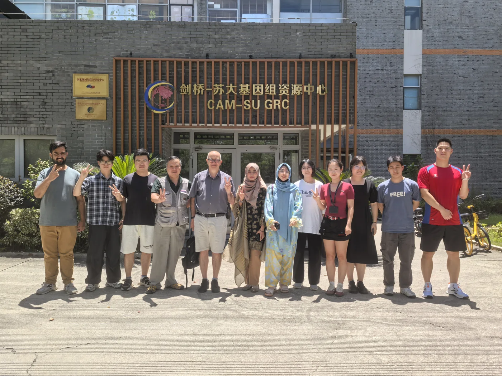
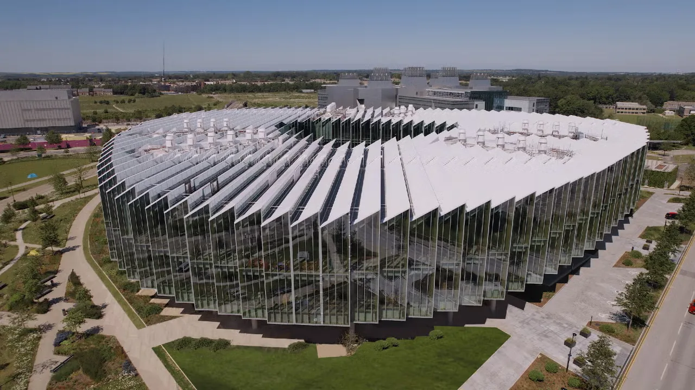
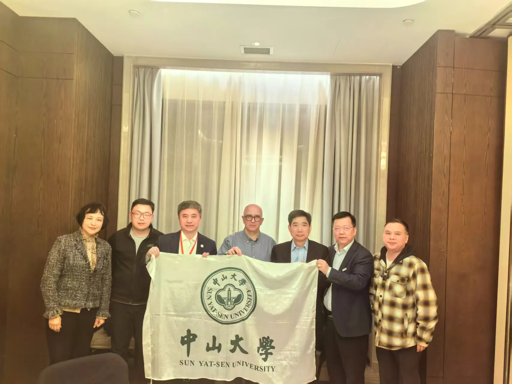
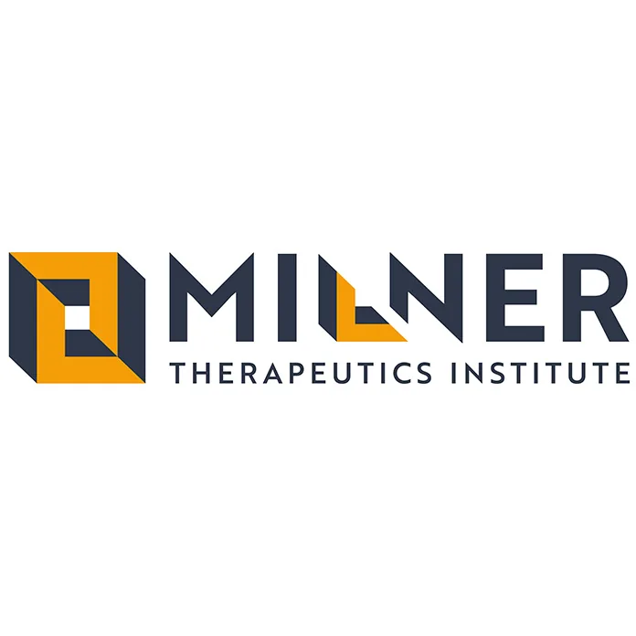

Suzhou · China
CAM-SU GRC
Cambridge–SU Genomic Resource Center
A genomics research connection linking Cambridge and Soochow University.
Visit partner websiteResearch across borders
Shared expertise, from fundamental biology to therapeutic discovery.
Find a partner by organisation type or research focus.
5 collaborators

Suzhou · China
Cambridge–SU Genomic Resource Center
A genomics research connection linking Cambridge and Soochow University.
Visit partner website
United Kingdom
NGS / Transcriptomics · Discovery Sciences, R&D
Our collaborator listing identifies Graham Belfield in NGS/Transcriptomics, Discovery Sciences, R&D.
Visit partner website
Valencia · Spain
Príncipe Felipe Research Centre
A research partnership linking adipose tissue biology, lipotoxicity, obesity and diabetes. Explore the dedicated Valencia page for related teams.
Explore Valencia
Hong Kong · China
Sino–UK Kangyi Joint Laboratory of Immunometabolism
The joint laboratory connects HKIAS with TVPlab in Cambridge and CIPF Valencia, focusing on immunometabolism and cardiovascular metabolism.
Explore this collaboration
Cambridge · United Kingdom
AI and Computational Research
Namshik Han’s group combines AI and integrated biological data to identify disease mechanisms, therapeutic targets and drug repurposing opportunities.
Visit partner websiteInterested in a research collaboration? Tell us about your scientific question.